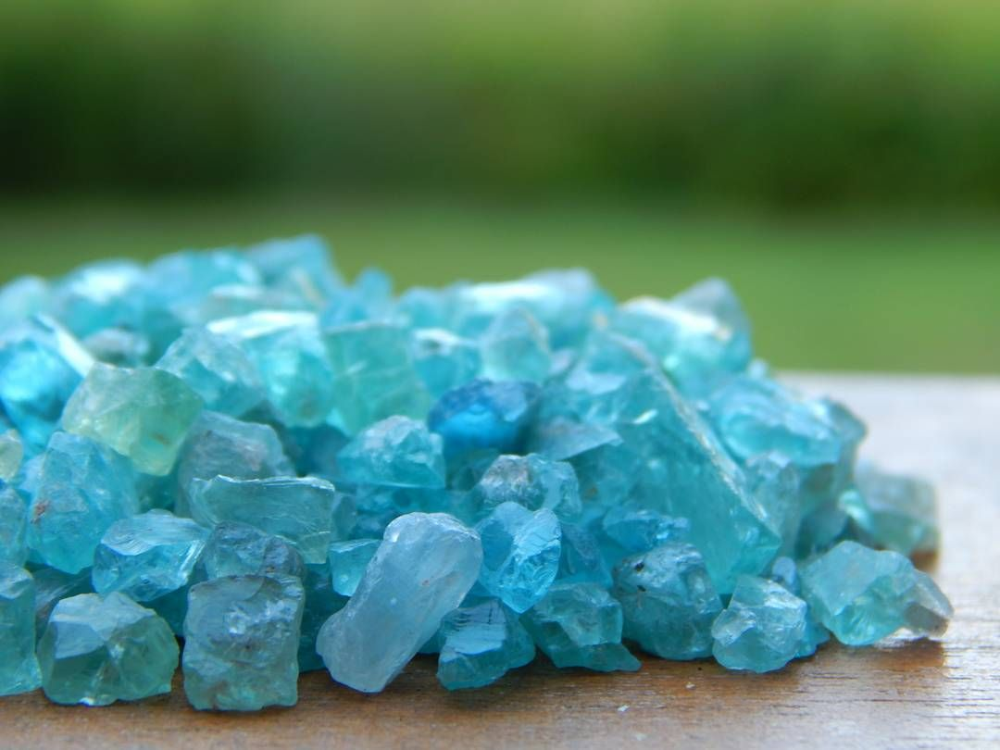
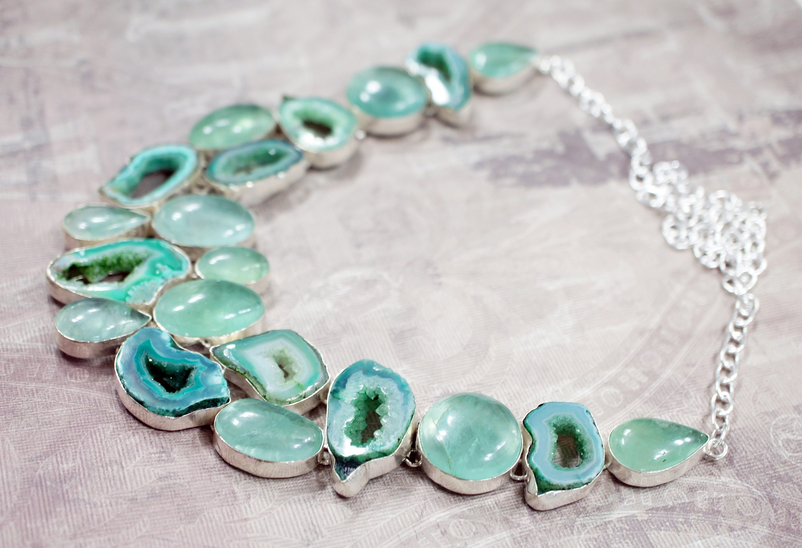
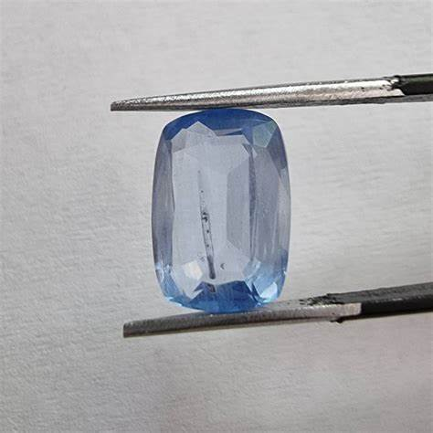
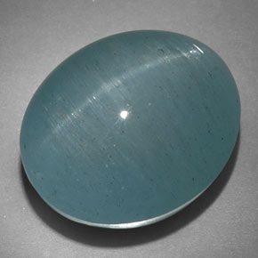
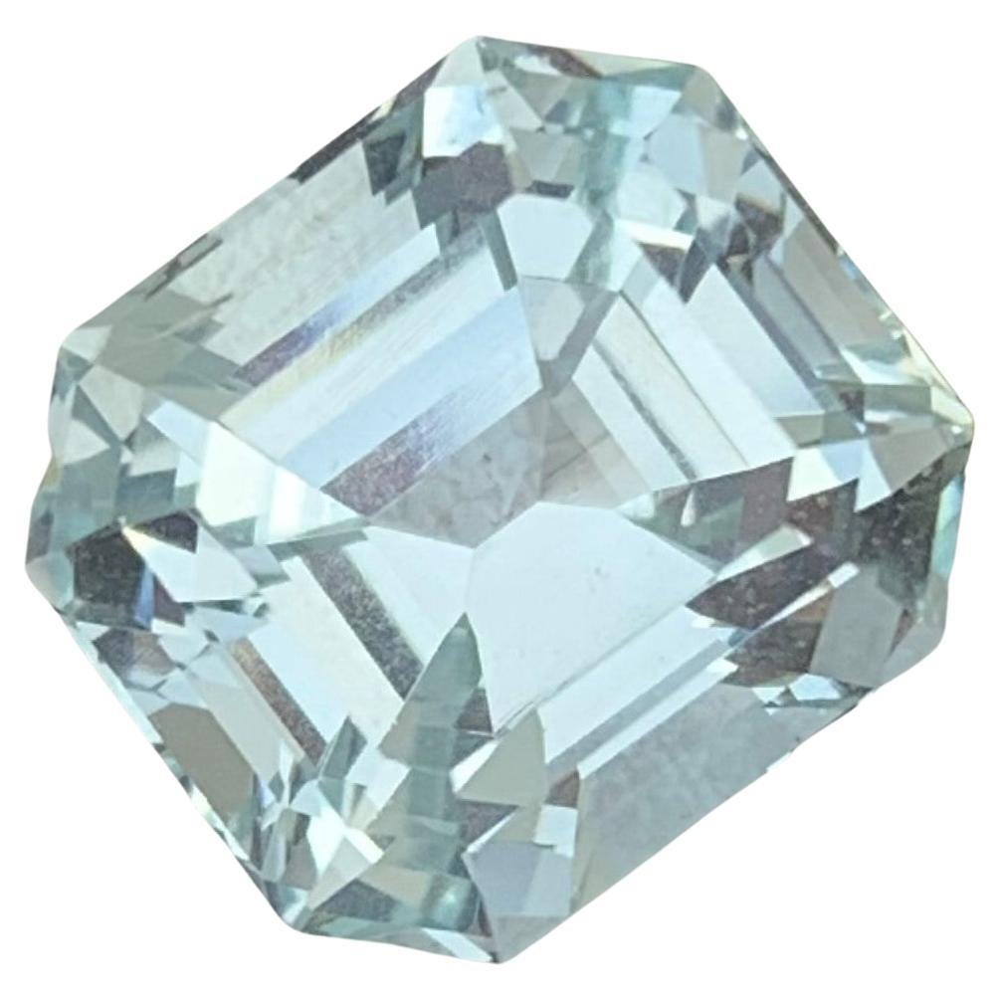

Aquamarine: The Serene Blue Gem
Introduction to Aquamarine
Aquamarine with its tranquil blue-green hue is a gemstone that evokes the calming essence of the sea. This crystal, a variety of the mineral beryl, has been admired for centuries not only for its serene beauty but also for its connection to the ocean and the soothing energy it is believed to bring. Aquamarine's color can range from a light, nearly transparent blue to a deep vibrant turquoise depending on the presence of iron in its crystal structure. This variability in color makes aquamarine a cherished gemstone among collectors, jewelers, and crystal enthusiasts.
Often used in both raw and polished forms, aquamarine is prized for its clarity and the subtlety of its color. Its affordability, relative to other precious gems, combined with its serene appearance, has made aquamarine a favorite for jewelry and ornamental uses. Whether worn as a calming accessory or treasured as part of a gemstone collection, aquamarine continues to enchant with its refreshing color and clarity.
Beyond its aesthetic charm, aquamarine is also believed to possess a range of metaphysical properties. Many people use aquamarine in meditation practices, believing it can enhance clarity, encourage communication, and bring about a sense of calm and balance.
If you're interested in finding aquamarine in its natural habitat, be sure to explore our Aquamarine Gem Mining Maps. These maps highlight prime locations where you can go rockhounding for this beautiful and peaceful crystal!
How Aquamarine Forms
Aquamarine forms deep within the Earth through a complex geological process involving high temperatures and pressures. It is typically found in pegmatites, which are coarse-grained igneous rocks, as well as in certain metamorphic rocks. The formation process begins when beryllium-rich fluids permeate through cracks and cavities within these rocks. Over millions of years, as these fluids cool and crystallize, beryl crystals, including aquamarine, start to form.
The presence of iron within the crystal structure of beryl is what gives aquamarine its characteristic blue to blue-green color. The depth of this color depends on the concentration of iron, with higher concentrations resulting in deeper and more vivid hues. The unique conditions under which aquamarine forms, including temperature, pressure, and the presence of trace elements, influence not only its color but also its size and clarity.
Aquamarine crystals often grow in prismatic shapes, with long well-formed hexagonal crystals being common. These crystals can range from small delicate stones to large gem-quality specimens that are highly valued in the gemstone market. The slow and steady growth of these crystals under optimal conditions is what gives aquamarine its remarkable clarity and brilliance.
If you're eager to discover aquamarine in its natural environment, don't miss our Aquamarine Gem Mining Maps. These resources will guide you to some of the best rockhounding spots for finding aquamarine in the wild.
Aquamarine's Structure and Properties
Aquamarine is a type of beryl with the chemical formula Be₃Al₂(SiO₃)₆, meaning it is composed of beryllium, aluminum, and silicon dioxide. The distinctive blue-green color of aquamarine is due to the presence of iron impurities within its crystal lattice. This iron content, combined with the natural irradiation the stone undergoes, results in the range of blue tones that make each piece of aquamarine unique.
Aquamarine belongs to the hexagonal crystal system, characterized by its six-sided prismatic crystals. This structure contributes to aquamarine's ability to refract light, giving it a bright glassy luster when polished. The symmetry and clarity of aquamarine crystals make them highly desirable for cutting into gemstones.
With a hardness of 7.5 to 8 on the Mohs scale, aquamarine is a durable gemstone suitable for various jewelry applications. Its relatively high hardness ensures that it can withstand regular wear, although care should still be taken to protect it from scratches and harsh impacts to maintain its natural beauty.
In addition to its aesthetic appeal, aquamarine exhibits pleochroism, meaning it can show different colors when viewed from different angles. This optical property adds to the gemstone's allure as it can appear to shift in color depending on the light and angle of viewing.
Uses of Aquamarine
Throughout history, aquamarine has been cherished for a variety of uses, from adornment to spiritual tools. In the realm of jewelry, aquamarine is celebrated for its soothing color and versatility. It is commonly used in rings, necklaces, earrings, and bracelets, where its gentle hues can complement various metals and other gemstones to create harmonious pieces. Aquamarine is also favored in statement jewelry where larger stones are set to highlight their serene beauty.
Beyond its use in personal adornment, aquamarine has found a place in home décor. Polished aquamarine crystals and clusters are often displayed as decorative objects, bringing a touch of serenity into homes and offices. Aquamarine bookends, sculptures, and even furniture inlays are popular among those who appreciate the natural elegance of this crystal.
In addition to its decorative uses, aquamarine has been valued for its purported ability to enhance communication and understanding. It is often used in crystal healing practices to promote clarity of thought, reduce stress, and encourage truthful expression.
While aquamarine's primary appeal lies in its visual and metaphysical qualities, its functional properties make it a versatile gemstone loved by both artisans and spiritual seekers alike.
Aquamarine in History
Aquamarine has a rich history that dates back to ancient times, where it was often associated with the sea and believed to protect sailors during their voyages. The name "aquamarine" is derived from the Latin words "aqua" meaning water and "marina" meaning of the sea, reflecting its deep connection to the ocean. Ancient Romans believed that aquamarine was sacred to Neptune, the god of the sea, and would protect them from dangers on the water.
In the Middle Ages, aquamarine was thought to possess healing properties and was used in various treatments for ailments related to the throat and digestive system. It was also believed to bring about clarity of mind and to act as an antidote to poison, making it a highly valued stone among scholars and healers.
Aquamarine has also been associated with love and marriage. In ancient times, it was thought to rekindle the flame of love between married couples and was often given as a wedding gift. This tradition continues today with aquamarine being a popular choice for anniversary gifts, particularly for the 19th wedding anniversary.
Throughout history, aquamarine has been revered not only for its physical beauty but also for its supposed mystical powers. It has been used in talismans and amulets for protection, healing, and spiritual guidance, and its legacy continues to inspire modern practices and beliefs.
Metaphysical Properties of Aquamarine
Aquamarine is often attributed with a variety of metaphysical properties, making it a favored stone in spiritual practices and crystal healing. One of the most commonly cited properties of aquamarine is its ability to promote calmness and reduce stress. It is often used in meditation practices, where it is believed to help quiet the mind, enhance focus, and encourage a peaceful state of being.

Aquamarine is also thought to enhance communication and self-expression, making it a popular choice for those who seek to improve their ability to articulate thoughts and ideas. Some practitioners use aquamarine to clear the throat chakra, aiding in honest and open communication.
Additionally, aquamarine is believed to offer protection, especially for travelers and those embarking on new journeys. It is said to shield its wearer from negative energy and bring about a sense of safety and security. This protective quality is often invoked in crystal grids and other arrangements designed to create a safe and harmonious environment.
Emotionally, aquamarine is claimed to promote inner peace and balance. It is thought to help alleviate fears, calm the nerves, and encourage a positive outlook, making it a popular stone for those seeking emotional stability and clarity.
While these claims about aquamarine's metaphysical properties are not supported by scientific evidence, they remain an integral part of the lore surrounding this captivating crystal. Whether or not one subscribes to these beliefs, the enduring appeal of aquamarine in both historical and contemporary contexts is undeniable.
Aquamarine Varieties
Aquamarine comes in various shades of blue and blue-green, and these variations can be classified into different types. The most valuable aquamarine gemstones are typically a deep blue, known as "Santa Maria" aquamarine, named after a famous mine in Brazil. Other notable varieties include:
Maxixe Aquamarine
This variety features a deep blue color but tends to fade when exposed to light due to its sensitivity.
Aquamarine Cat's Eye
Rare and highly prized, this variety exhibits a unique optical phenomenon called chatoyancy, resembling a cat's eye.
Seafoam Aquamarine
Characterized by its mix of blue and green, this variety often appears in lighter shades.
Understanding these varieties can be important for collectors and buyers, as they influence the gemstone's value and appeal.
Aquamarine Treatments and Enhancements
Aquamarine is often treated to enhance its color. The most common treatment is heat treatment, which can deepen the blue color by removing the greenish tones. This process is stable and widely accepted in the gemstone industry, but it's important for consumers to know about it, as untreated stones may carry a premium.
- Heat Treatment: Typically performed at temperatures between 400-450°C, this treatment is used to enhance the stone's color.
- Irradiation: Though less common, irradiation can also be used to enhance color, but it may lead to temporary or permanent changes in the gemstone's stability.
Buyers should always inquire about whether a stone has been treated to ensure they understand the quality and value of their purchase.
Buy & Sell Authentic Aquamarine Here
Major Sources of Aquamarine
Aquamarine is mined in several countries, with some regions being more renowned for the quality and size of the stones they produce. Major sources include:
- Brazil: The most famous source, particularly the Santa Maria mine, is known for producing deep blue aquamarines.
- Pakistan: Notable for producing aquamarines with excellent clarity and color, often found in the high-altitude mines of the Karakoram Mountains.
- Madagascar: Known for producing both deep blue and lighter seafoam-colored aquamarines.
- Nigeria: Produces large quantities of aquamarine, often in greenish-blue shades.
- Russia: Historically significant, especially in the Ural Mountains, known for producing aquamarines of deep blue hue.
Where to Find Aquamarine in the United States
Aquamarine is found in different locations throughout the United States, including California, New Mexico, Utah, and more. Use our gemstone and crystals map to locate different aquamarine locations in the United States.
Use our map to get exact locations to find aquamarine in the United States.
Aquamarine in Popular Culture
Aquamarine has appeared in various aspects of popular culture, from literature to film. Notable references include:
- Birthstone: Aquamarine is the traditional birthstone for March, symbolizing youth, health, and hope.
- Lore and Mythology: Aquamarine has been featured in numerous myths and legends, often associated with mermaids and the sea. It was believed to be the treasure of mermaids and to protect sailors on their voyages.
- Jewelry: Famous aquamarine jewelry pieces have been worn by royalty and celebrities, including a stunning aquamarine tiara belonging to Queen Elizabeth II.
Aquamarine Care and Maintenance
While aquamarine is relatively durable, it still requires proper care to maintain its beauty:
- Cleaning: Use warm, soapy water and a soft brush to clean aquamarine. Avoid harsh chemicals or ultrasonic cleaners, which can damage the stone.
- Storage: Store aquamarine separately from harder gemstones like diamonds to prevent scratches. It's best kept in a soft pouch or lined jewelry box.
- Exposure: Avoid prolonged exposure to intense heat or direct sunlight, as it can cause the color to fade, especially in treated stones.
Conclusion
Aquamarine is not only a gem of the sea but a stone that carries a rich history, diverse uses, and cultural significance. From its formation deep within the Earth to its refined use in jewelry and its revered status in metaphysical circles, aquamarine's allure is as timeless as the ocean it resembles.